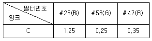
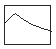
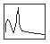
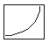
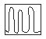
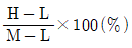
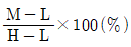
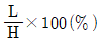
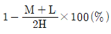

인쇄기사 (2013-06-02 기출문제)
1과목: 인쇄공학
1. 계면장력을 사용하여 분류한 젖음 형태가 아닌 것은?
- 확산 젖음
- 침투 젖음
- 부착 젖음
- 가압 젖음
(정답률: 알수없음)

2. 물에 대한 접촉각이 높은 순서, 즉 친유성이 높은 금속의 순서는?
- 구리 > 아연 > 알루미늄 > 철
- 구리 > 아연 > 철 > 알루미늄
- 아연 > 구리 > 알루미늄 > 철
- 아연 > 구리 > 철 > 알루미늄
(정답률: 70%)
3. 표지는 본문과 별도로 취급되며, 책의 앞뒷 부분에 반드시 면지가 사용되는 제책방식은?
- 양장제책
- 반양장제책
- 호부장제책
- 무선철제책
(정답률: 75%)
4. WF(Walker-Fetsko)의 전이 방정식에 적용되는 3가지 개념(concept)에 해당되지 않는 것은?
- 판에 남은 잉크량(x값)
- 자유잉크의 분열(f값)
- 고정잉크의 개념(b값)
- 용지의 피복면적비(k값)
(정답률: 80%)
5. 인쇄 작업실의 공조조건으로 비용을 저렴하게 효율적으로 처리하는 방안과 거리가 먼 것은?
- 습기를 방지하기 위하여 바닥 재료는 방수 처리한다.
- 인쇄실 조명을 안정화하기 위하여 북쪽에 창을 만든다.
- 종이 저장창고는 인쇄실 보다 온∙습도를 높게 유지한다.
- 냉∙난방 설계시 고온이면 공기가 상승하고, 저온이면 공기가 하강한다는 원리를 이용한다.
(정답률: 75%)
6. 책의 표면가공 처리방법과 관계가 먼 것은?
- 니스코팅
- 비닐코팅
- 왁스코팅
- 금∙은색 인쇄
(정답률: 알수없음)
7. 유체의 저항성 중 흐름(flow)에 대한 액체의 저항성은?
- 탄성
- 점탄성
- 소성
- 점성
(정답률: 80%)
8. 인쇄판과 잉크의 접촉각이 다음과 같을 때 가장 젖음이 좋은 경우는?
- 180°
- 90°
- 45°
- 10°
(정답률: 알수없음)
9. 인쇄한 용지를 접어서 이 접장을 쪽수에 따라 모으는 것은?
- 등굴림
- 정합
- 고르기
- 접지
(정답률: 93%)
10. 미스팅(misting)에 영향을 주는 요인들 중 틀린 것은?
- 인쇄 속도가 증가하면 미스팅은 감소한다.
- 대기의 온도가 저하되어 건조해 있으면 미스팅이 촉진된다.
- 습도가 증가하면 미스팅은 감소된다.
- 롤러의 표면 요철이 심하면 미스팅이 많아진다.
(정답률: 알수없음)
11. 인쇄잉크와 같이 액체로서의 특성과 고체로서의 특성을 동시에 나타내는 물체의 거동을 과학적으로 취급하는 학문 분야는?
- 레오로지(rheology)
- 탄성학
- 소성학
- 점성학
(정답률: 91%)
12. 오랫동안 보관했던 잉크와 곧바로 제조된 잉크의 인쇄기상 유동성은 달라진다. 그 이유로 적절하지 않는 것은?
- 틱소트로피
- 경시변화
- 안료와 비이클의 삼차원적 구조
- 잉크의 트래핑
(정답률: 92%)
13. 오목판 인쇄로 인쇄물의 톤 재현이 되었을 때의 장점이 아닌 것은?
- 인쇄물이 선명하고 중후하다.
- 내쇄력이 극히 우수하다.
- 위조 방지의 효과가 있어서 유가증권 등의 고급인쇄에 사용이 가능하다.
- 인쇄판의 수정이 쉽다.
(정답률: 91%)
14. 습수의 표면현상에서 활성분자는 수용액의 내부보다 표면에 많이 모여 있게 되므로 표면의 농도가 높아지는 현상은?
- 흡착
- 건조
- 젖음
- 배향
(정답률: 59%)
15. 크리스탈리제이션(crystallization) 현상 방지법이 아닌 것은?
- 잉크에 건조제의 양을 줄인다.
- 상황에 따라 와세린, 피자마유 등을 가한다.
- 다른 건조제보다 코발트 건조제를 더 많이 첨가한다.
- 중첩인쇄하는 잉크에 겔 니스 등을 첨가한다.
(정답률: 82%)
16. 오프셋 인쇄에서 가늠맞춤이 틀릴 때 인쇄기에 의한 원인과 가장 거리가 먼 것은?
- 종이받이 완속장치의 좌우 불균형일 때
- 필름을 사용시 그 신축이나 홀더에의 접착불량일 때
- 앞가늠쇠와 옆가늠쇠의 고정나사가 풀려있을 때
- 그리퍼 강도가 고르지 못할 때
(정답률: 75%)
17. 다음 중 폭발성이 물질에 해당하는 것은?
- 디아조화합물
- 마그네슘
- 칼슘
- 황화인
(정답률: 80%)
18. 롤러 상에서 전이량에 영향을 주는 조건에 대한 설명이 잘못된것은? '
- 점도는 전이율에 반비례한다.
- 인쇄속도가 증가하면 전이계수는 감소한다.
- 인쇄압력의 상승에 따라 전이율은 상승한다.
- 예사성이 짧으면 전이가 잘되지 않고, 비산이 일어나기 쉽다.
(정답률: 알수없음)
19. 인쇄잉크의 택(tack)값이 높은 것을 사용할 때 주로 어떤 현상이 나타나는가?
- 잉크의 착색력이 약화된다.
- 용지의 뜯김현상이 일어난다.
- 습수에 대한 내항력이 약화된다.
- 인쇄물에 얼룩이 발생된다.
(정답률: 100%)
20. 인쇄물의 톤을 그라비어어 인쇄로 재현하였을 경우의 장점이 아닌 것은?
- 풍부한 계조와 색상을 낼 수 있다.
- 잉크의 광택과 피인쇄체간의 바인더로 접착력이 좋다.
- 망점의 면적효과와 두께효과를 같이 낼 수 있다.
- 판의 수정이 쉽다.
(정답률: 100%)
2과목: 인쇄재료학
21. 다음 중 종이의 지합에 가장 큰 영향을 미치는 인자는?
- 섬유의 길이
- 섬유의 두께
- 섬유의 화학적 조성분
- 초지기의 운전 속도
(정답률: 알수없음)
22. 고무롤러의 경도에서 오프셋용 잉크 롤러의 경도 값은?
- 5 ~ 20°
- 15 ~ 25°
- 25 ~ 40°
- 30 ~ 70°
(정답률: 60%)
23. 블랭킷 두께의 측정에 관한 설명 중 맞은 것은?
- 버니어켈리퍼스로 4곳의 두께를 측정한다.
- 블랭킷통에서 10kg/㎝장력을 가할 때의 두께이다.
- 두께의 허용치는 ±0.1mm이다.
- 635g/㎝의 장력에서 두께를 측정한다.
(정답률: 70%)
24. 산화중합형 평판오프셋 잉크의 원료 중 드라이어와 산화반응이 가장 잘 되는 것은?
- 안료
- 석유계수지
- 아마인유
- 콤파운드
(정답률: 80%)
25. 다음 중 잉크의 점도, 항복가 등을 간단히 측정할 수 있는 점도계는?
- 평행판 점도계
- 회전 점도계
- 경사판 점도계
- 모세관 점도계
(정답률: 75%)
26. 인쇄에 사용되는 잉크 중 많이 사용되는 안료는?
- 유기 안료
- 무기 안료
- 염료
- 체질 안료
(정답률: 80%)
27. 잉크의 연육기 중 생산성은 떨어지나 연속식으로 일정이하의 입도 잉크 생산, 낮은 분산온도로 인항 유동성이 안정된 잉크의 생산 방식은?
- 샌드 밀(send mill)
- 볼 밀(ball mill)
- 롤 밀(roll mill)
- 비드 밀(bead mill)
(정답률: 알수없음)
28. 스크린 잉크 중 수지 성분으로서 인쇄 후, 용제가 증발되면 수지가 안료를 고착시켜 피막을 형성하는 잉크를 어떤 잉크라고 하는가?
- 반응 경화형 잉크
- 증발 건조형 잉크
- 자외선 경화형 잉크
- 산화 중합형 건조 잉크
(정답률: 84%)
29. 매엽 평판용 오프셋 잉크는 인쇄 후 공기 중의 산소와 결합하여 완전하게 피막 건조를 한다. 이 때 공기 중의 산소는 잉크의 어느 부분과 결합하여 피막을 형성하는가?
- 카본블랙(carbon black)
- 말레인산(maleic acid)수지
- 아마인유(linseed oil)
- 하이드로카본(hydrocarbon)
(정답률: 70%)
30. 인쇄잉크용 용제를 분류하는 내용과 관계가 먼 것은?
- 비점에 의한 분류
- 증발 속도에 의한 분류
- 인쇄 속도에 의한 분류
- 극성에 의한 분류
(정답률: 70%)
31. 카본지를 사용하지 않고 복사할 수 있는 용지는?
- 감열지
- 엠보싱지
- 백상지
- 감압지
(정답률: 70%)
32. 제지에 사용되는 충전제는 탈크 및 탄산칼슘을 첨가하여 섬유 간에 형성된 미세한 공극을 충전(loading)한다. 충전제에 대한 설명 중 틀린 것은?
- 충전제 사용량을 증가시키면 종이의 물리적 강도는 향상된다.
- 충전제를 적당하게 사용하면 불투명도가 증가된다.
- 충전제 증량시 내부 결합력이 감소된다.
- 충전제의 사용으로 생산 비용을 조절할 수 있다.
(정답률: 40%)
33. 미국의 A. Voet가 잉크 유동성을 측정하기 위해 만든 점도계로 60초 후 점도를 mm로 나타내는 것은?
- 평행판 점도계(speadometer)
- Laray 점도계
- B형 점도계
- 잔-컵(Zahn cup)
(정답률: 84%)
34. 오프셋 인쇄에 사용되는 축임물의 바람직한 역할이 아닌 것은?
- 화선부에 잉크 부착을 방지한다.
- 판면을 잘 젖게 한다.
- 화선부를 선명하게 한다.
- 판면의 온도를 일정하게 한다.
(정답률: 알수없음)
35. 오프셋 윤전 인쇄시 종이가 블랭킷에 접촉되고, 다시 건조 장치 나 냉각 롤러를 통과하면 수분을 흡수, 방출하여 신축된다. 이 때 신축이 긴 쪽은?
- 결의 직각 방향
- 결의 방향
- 결의 방향과 결의 직각방향이 같다.
- 경의 대각선 방향
(정답률: 알수없음)
36. 인쇄용지의 컬(Curl) 발생에 가장 큰 영향을 미치는 것은?
- 표면과 이면의 백색도 차
- 표면과 이면의 수분 차
- 표면과 이면의 강도 차
- 표면과 이면의 광택도 차
(정답률: 80%)
37. 포스터 용지, 군사용 지도용지 등과 같이 높은 습윤강도가 요구되는 종이에 사용되는 약품이 아닌 것은?
- 에폭시화 폴리아미드 레진
- 칼슘 카보네이트
- 요소 포름알데히드 수지
- 멜라민 포름알데히드 수지
(정답률: 82%)
38. 오프셋 윤전기에 사용되는 콤프레시블 블랭킷의 특징이 아닌것은?
- 거친 종이면의 인쇄도 좋은 결과를 얻을 수 있다.
- 탄성복원이 매우 좋다.
- 판의 내쇄성이 향상 된다.
- 콤프레시블 블랭킷은 패킹을 넣어도 일반 블랭킷 정도로 압이 크게 변하지 않는다.
(정답률: 50%)
39. 다음 중 습수액에 관한 설명으로 가장 옳은 것은?
- 높은 pH는 Al판 위의 아라비아고무 층을 파괴한다.
- 낮은 pH는 Al판 표면(비화선부)의 산화를 촉진시킨다.
- 낮은 pH는 Al판 위의 아라비아고무 층을 파괴한다.
- 높은 pH는 Al판 표면(비화선부)의 산화를 촉진시킨다.
(정답률: 80%)
40. 열 또는 빛의 분해에 의해 방출되는 가스의 발포를 이용하여 화상을 형성하는 필름은?
- 베시큘러 필름
- 포크스 필름
- 반전 필름
- 리스 필름
(정답률: 알수없음)
3과목: 특수인쇄학
41. 충분한 건조 후 인쇄물을 포장하여 수출한 스크린 인쇄물 후면에 잉크 뒷묻음이 발생하였다. 이 현상을 무엇이라고 하는가?
- 모틀링(mottling)
- 스크리닝(screening)
- 블록킹(blocking)
- 블러싱(blushing)
(정답률: 알수없음)
42. 그라비어 잉크의 유동성에 미치는 영향이 가장 적은 것은?
- 안료의 흡유량
- 안료 색상별 수지의 친화도
- 안료 입자의 크기
- 수지(resin)의 혼합 정도
(정답률: 알수없음)
43. 다음 중 현재 플렉소그래피 인쇄가 차지하는 비율이 증가하는 이유로 가장 적합한 것은?
- 수정잉크와 UV잉크의 사용이 가능하므로
- 필름인쇄가 가능하므로
- 석유계 용제 사용이 가능하므로
- 고속 인쇄가 가능하므로
(정답률: 알수없음)
44. 플렉소그래피 인쇄기 중 표준형으로 유닛이 수직으로 배치되어 있고, 각 유닛마다 독립된 압통을 가지고 잇는 인쇄기는 어느것인가?
- 드럼형 플렉소그래피 인쇄기
- 스택형 플렉소그래피 인쇄기
- 인라인형 플렉소그래피 인쇄기
- 아웃라인형 플렉소그래피 인쇄기
(정답률: 91%)
45. 다음은 그라비어인쇄에 사용한 용제의 회수 및 처리에 관한 사항으로 적당하지 못한 것은?
- 활성탄으로 용제가스를 흡착하여 수증기로 탈착, 회수한다.
- 연소로에서 직접 연소하여 처리한다.
- 촉매를 사용하여 간접 연소하여 처리한다.
- 기화처리하여 대기 중에 버리고 잔액은 매장하여 처리한다.
(정답률: 알수없음)
46. 자외선 경화형 잉크에 사용되는 안료 중에서 흡광도가 가장 높은 것은?
- 백색 안료
- 흑색 안료
- 황색 안료
- 적색 안료
(정답률: 90%)
47. 다음 중 유리 인쇄시 밤[茶]색 잉크의 착색제는?
- 산화크롬
- 알루민산코발트
- 유화카드늄
- 망간염
(정답률: 60%)
48. 액정인쇄에 사용되는 잉크의 특징으로 틀린 것은?
- 저소비 전력이다.
- 소형, 박형 표시가 가능하다.
- 시각이 넓다.
- 패턴을 자유롭게 그린다.
(정답률: 60%)
49. 스크린 인쇄에서 화학구조에 의한 용제의 분류 중 지방족 탄화수소에 속하는 것은?
- 사이클로핵사논
- 키시놀
- 벤졸
- 미네랄스피릿트
(정답률: 알수없음)
50. 플렉소그래피 인쇄기의 아닐록스 롤러는 금속실린 더 표면에 홈을 파고 니켈에 크롬도금을 한 조각롤러의 종류가 아닌 것은?
- 격자형(Q)
- 직선형(S)
- 피라미드형(P)
- 사선형(R)
(정답률: 90%)
51. 증권 인쇄를 하기 위한 오목판 인쇄기의 구조에서 와이핑 장치의 역할은?
- 잉크집에서 판면으로의 잉크량을 제어한다.
- 비화선부의 불필요한 잉크를 제거한다.
- 인쇄 속도에 따라 자동적으로 인쇄압을 조절한다.
- 급지부에 장치되어 인쇄 중 종이의 구겨짐을 방지한다.
(정답률: 70%)
52. 금속용잉크 중 식품포장용으로 이용할 경우 가장 필요한 성질은?
- 건조성과 내열성
- 내용제성과 습식도포성
- 가공성
- 내레토르트성
(정답률: 80%)
53. 그라비어 인쇄기의 압통 장치에 감겨져 있는 고무의 종류와 경도는?
- 니트릴 고무, 75~90도
- 니트릴 고무, 50~75도
- MBR 고무, 75~85도
- MBR 고무, 65~75도
(정답률: 70%)
54. 잉크젯 인쇄 장치와 관계가 없는 것은?
- 신호전극
- 편향전극
- 압력 잉크노즐
- 독터 및 블랭킷
(정답률: 알수없음)
55. 스크린 인쇄에서 사용되는 스퀴지의 재질 중 비극성 용제에 사용하기에 가장 적합한 것은?
- 천연고무
- ER라버(에틸렌∙플로피싱고무)
- 니트릴 고무
- 부틸 고무
(정답률: 40%)
56. 그라비어 인쇄기에서 판통에 니켈 도금을 하는데 있어서 도금액의 pH 변화를 억제하는데 사용되는 것은?
- NiCl2
- H2SO4
- NiSO4
- H2NO3
(정답률: 알수없음)
57. PCB 인쇄시 solder resist ink 의 밀착성이 나쁠 경우의 원인이 아닌 것은?
- 브러시가 약하다.
- 인쇄전에 손자국이 피인쇄체에 남아 있다.
- 잉크가 보관 중에 변질되었다.
- 경화 속도가 빠르다.
(정답률: 60%)
58. 날염인쇄 방법 중 세밀한 선무늬 인쇄에 적합하며, 지형맞추기가 용이한 방식은?
- 직접 날염법
- 발염
- 방염
- 수공염
(정답률: 90%)
59. 일반적으로 백색광 등으로 재생되는 홀로그램의 종류가 아닌 것은?
- 멀티플렉스(multiflex) 홀로그램
- 레인보우(rainbow) 홀로그램
- 리프맨(lippman) 홀로그램
- 패턴(pattern) 홀로그램
(정답률: 알수없음)
60. 평판형 정전 인쇄의 장점이 아닌 것은?
- 위생적이고 안전함
- 영 용융 방식임
- 뒷묻음 방지가 가능함
- 건조시간 불필요함
(정답률: 80%)
4과목: 인쇄색채학
61. GATF 표색체계에서 어떤 C색 잉크의 색농도가 다음 표와 같을 때 이 잉크의 색상효율은?

- 35%
- 48%
- 10%
- 76%
(정답률: 알수없음)
62. 색을 보기 위한 광원에 대한 설명으로 올바른 것은?
- 가시광선을 복사하는 광원이 있어야 색을 지각한다.
- 광원은 모두 같은 분광 특성을 지닌다.
- 파장별 분광반사분포는 같게 나타난다.
- 광원의 반사분포는 색채에 영향을 끼치지 않는다.
(정답률: 84%)
63. 정확한 색상을 측정하기 위하여 사용하는 스펙트로포토미터(Spectrophotometer), 컬러리미터(Colorimeter), 덴시토미터(Densitometer)와 같은 기구를 무엇이라고 하는가?
- 분광광도계
- 조도 측정기
- 굴절율 표시계
- CIE 표준 표색계
(정답률: 54%)
64. 다음 색채 측정 결과에서 가장 높은 색온도를 갖는 광원의 측정값은?




(정답률: 82%)
65. 색채의 여러 가지 감정효과에 대한 설명으로 옳은 것은?
- 배색을 통한 색의 느낌에서는 각각의 난색 또는 한색을 사용 했는가가 중요한 것이 아니라, 완성된 배색의 결과가 따뜻하게 보이는가, 차갑게 보이는가가 중요하다.
- 부드러운 분위기를 조성하려면 명도와 순도가 높은 색은 선택한다.
- 단파장 계통의 색채 실내에서는 시간의 경과가 길게 느껴지고, 장파장 계통의 색채 실내에서는 시간의 경과가 짧게 느껴진다.
- 빨간 빛 아래에서는 물건의 무게가 더 가볍게 느껴지고, 초록 빛 아래에서는 더 무겁게 느껴지므로, 근무시간에 이리저리 옮겨야하는 상자나 옹기에는 밝고 따뜻한 색을 쓰는것이 좋다.
(정답률: 알수없음)
66. 다음은 각기의 보색대가 갖는 특징을 서술한 것이다. 틀린 것은?
- 빨강과 초록은 보색이며, 이 두 유채색은 같은 명도이다.
- 주홍과 청록은 보색대이고, 동시에 극도의 한난대비 이다.
- 연두와 자주는 보색대이고, 동시에 채도대비를 나타낸다.
- 노랑과 보라는 보색대비일 뿐만 아니라 명암대비도 나타낸다.
(정답률: 50%)
67. 색의 3속성 중 인간의 눈에 가장 감각이 예민한 것은?
- 명도
- 채도
- 색상
- 순도
(정답률: 64%)
68. GATF에서 색상오차(Hue Error)를 나타낸 식은? (단, 여기서 H:농도의 최대치, M:중간치, L:최소치를 나타낸다.)




(정답률: 알수없음)
69. 다음 중 CIE색표계에서 같은 수식 변환을 하여 얻은 결과가 아닌 것은?
- HSB
- L*C*h
- Yxy
- L*a*b*
(정답률: 알수없음)
70. 색의 혼합원리는 색채재현의 사진술에도 적용된다. 다음 중 광학적 색채무늬로 재현되는 사진이나 필름이나 인화지 등에 적용되는 혼색방법은?
- 가법혼색
- 회전혼색
- 보색혼색
- 감법혼색
(정답률: 50%)
71. 컬러 교정에서 고려되어야 할 사항인 것은?
- 인쇄시 컬러 도트수가 전체적으로 일정한지를 확인토록 한다.
- 컬러 교정시 기존의 Commercial 잉크표준은 배제하고 ISO를 표준으로 한다.
- 인쇄시의 시각적 형태와의 매치를 위해 컬러, 밝기, 인쇄될 종이의 표면특성이 고려되어야 한다.
- 컬러 교정시 가장 유의해야 할 사항은 청자(Cyan)색에 대한 마젠타(Magenta)와 노랑(Yellow)의 상대포화비율 점검이다.
(정답률: 알수없음)
72. 다음은 색광 혼합과 물감 혼색의 설명이다. 바르게 설명되지 않은 것은?
- 물감(색료)의 3원색은 자주(마젠타), 파랑(시안), 초록(Green)이다.
- 색광의 3원색은 빨강(Red), 초록(Green), 청자(Blue)이다.
- 색료의 3원색은 잉크의 3원색과 같다.
- 색료 혼합의 2차색들은 색광 혼합의 3원색(1차색)이 된다.
(정답률: 알수없음)
73. 3색 표색계에 있어서 기초자극은 일반적으로 무엇을 뜻하는가?
- 3원색
- 주파장
- 백색자극
- 광원
(정답률: 알수없음)
74. 태양의 직사광에 의하여 조명된 물체색을 나타낼 때 사용되는 CIE 표준광은?
- 표준광 A
- 표준광 B
- 표준광 C
- 표준광 D65
(정답률: 70%)
75. 조도를 기준으로 할 때, 학교에서 조도단계가 높은 곳부터 낮은 순으로 바르게 나열된 것은?
- 정밀제도 → 일반교실 → 공예조작 → 옥외운동장 → 관리실
- 일반교실 → 정밀제도 → 옥외운동장 → 공예조작 → 관리실
- 정밀제조 → 공예조작 → 일반교실 → 관리실 → 옥외운동장
- 일반교실 → 옥외운동장 → 관리실 → 공예조작 → 정밀제도
(정답률: 84%)
76. Dot gain에 대한 설명으로 적합한 것은?
- 스크린된 망점이 필름이나 인쇄판에서 보다 종이에 인쇄될 때 커져서 세밀한 느낌을 약화시키고 대비를 낮추는 현상
- 스크린의 각도 맞춤이 제대로 되지 않을 때 발생하는 망점에 의한 주기적인 패턴 현상
- 원고의 화질에 대하여 필요 이상으로 높은 해상도로 입력시킨 경우에 나타나는 현상
- 아날로그 데이터를 디지털 데이터로 변환시킬 때 나타나는 현상
(정답률: 알수없음)
77. 색의 속성에 대한 설명 중 잘못된 것은?
- 명도는 유채색과 무채색 모두 존재한다.
- 채도는 색상의 강약에 대한 시지각적인 특성을 말한다.
- 동일한 색상, 동일한 명도를 가진 색은 채도도 동일하다.
- 일반적인 관찰 조건에서 물체색의 상대적인 밝기를 말할 때는 라이트니스(lightness)라고 한다.
(정답률: 64%)
78. 색상의 강약에 대한 시지각적인 특성을 말하는 것은?
- 색상
- 명도
- 채도
- 색입체
(정답률: 86%)
79. Ostwald 표색기호 2Rne에서 e는 무엇을 나타내는가?
- 색상
- 흑색량
- 백색량
- 유채색량
(정답률: 50%)
80. 색온도 값이 3000K 이면 약 몇 Deca Mired 인가?
- 0.003
- 0.03
- 33
- 333
(정답률: 62%)
5과목: 인쇄작업론 및 품질관리
81. 다음 중 인쇄압이 가장 큰 것은?
- 평압식인쇄
- 원압식인쇄
- 윤전식인쇄
- 분사식인쇄
(정답률: 80%)
82. 안전의 경제적 효과에 대한 설명으로 거리가 먼 것은?
- 안전계획은 안전투자에 의해 좌우된다.
- 안전예산제도의 확립이 중요하다.
- 안전은 수지가 맞지 않는다.
- 재해로 인한 손실은 거액이 된다.
(정답률: 80%)
83. 그라비어(Gravure) 인쇄기의 본체 구조장치가 아닌 것은?
- 건조 장치
- 천공 장치
- 독터 장치
- 판통 장치
(정답률: 91%)
84. 계란 표면과 같이 부서지기 쉬운 면에 잉크를 전사하는 방식은?
- 라벨 인쇄
- 융기 인쇄
- 정전 인쇄
- 발포 인쇄
(정답률: 70%)
85. 다음 중 달그렌 습수장치의 특성은?
- 몰톤 및 슬리브 착용이 필수
- 묻힘롤러 대형화 및 고경도화
- 잉크 묻힘롤러의 별도 필요
- 물과 잉크가 판면상에 동시 전이
(정답률: 알수없음)
86. 블랭킷에서 인쇄용지로 잉크가 전이될 때 용지의 잉크흡수 등의 현상으로 망점이 원래의 크기보다 줄어드는 현상은?
- Dot gain
- Sharpening
- Slur
- Shortness
(정답률: 73%)
87. 품질관리 활동을 전개하는데 있어서 기본적인 QC수법으로 알려진 7가지 도구 중 불량, 결점, 고장 등에 대하여 어떤 항목에 문제가 있는지, 그 영향은 어느 정도인지를 알아내는데 사용되는 방법은?
- 히스토그램(histogram)
- 산점도(scatter diagram)
- 파레토그램(pareto diagran)
- 특성요인도(characteristic diagram)
(정답률: 67%)
88. 디지털 인쇄기에 대하여 바르게 설명한 것은?
- PS판에 디지털 제판한 것을 사용
- 세밀한 포지티브 필름을 사용
- 이미지 실린더에 잠상을 만들어 토너를 사용
- E-프린트의 인쇄부는 잠상통과 압통만으로 구성
(정답률: 80%)
89. 오프셋 매엽기에서 삽지장치(insertion system)의 역할을 바르게 설명한 것은?
- 가늠맞춤이 끝난 종이를 감속시켜서 회전하고 있는 압통의 그리퍼에 정확하게 물려준다.
- 가늠맞춤 장치에서 일단 정지된 종이를 가속시켜서 회전하고 있는 압통의 그리퍼에 정확하게 물려준다.
- 가늠맞춤 장치에서 일단 정지된 종이를 가속시켜서 회전하고 있는 판통의 그리퍼에 정확하게 물려준다.
- 가늠맞춤이 끝난 종이를 감속시켜서 회전하고 있는 판통의 그리퍼에 정확하게 물려준다.
(정답률: 37%)
90. 오프셋 인쇄에서 블랭킷 밑에 고무포와 종이를 넣은 패킹법은?
- 민 패킹(solid packing)
- 굳은 패킹(hard packing)
- 중간 패킹(semi hard packing)
- 연한 패킹(soft packing)
(정답률: 알수없음)
91. 오프셋 인쇄기에서 활동부의 국부적, 순간적 압력 분산을 위하여 실시하는 급유의 효과를 무엇이라 하는가?
- 감마효과
- 냉각효과
- 응력분산효과
- 기타효과
(정답률: 알수없음)
92. 출판 디자인의 정의를 설명한 것 중 틀린 것은?
- 출판 디자인은 출판 기획 내용을 시각화시키는 것을 말한다.
- 편집 이념을 시각화 한 것을 말한다.
- 출판 디자인은 책의 상품성을 높이는 것을 말한다.
- 출판의도에 따라서 디자이너의 생각을 중요시 한다.
(정답률: 알수없음)
93. 화상 입력에서 검은색 수정을 하는 방법이 아닌 것은?
- UCR
- UCA
- GCR
- UCC
(정답률: 알수없음)
94. 세미 하드 패킹(semi hard packing)에 있어서 블랭킷의 고무 경도는?
- 10 - 25°
- 70 - 75°
- 90 - 95°
- 25 - 40°
(정답률: 59%)
95. 출판계약시 계약방식으로 거리 먼 것은?
- 저작재산권 양도 계약
- 출판 이용허락 계약
- 판매권 계약
- 출판권 설정 계약
(정답률: 알수없음)
96. 농산물 포장용 박스의 인쇄에 가장 널리 사용되는 인쇄방식은?
- 스크린 인쇄
- 오프셋 인쇄
- 플렉소 인쇄
- 그라비어 인쇄
(정답률: 알수없음)
97. 압통의 운동에 따라 행하는 인쇄의 3형식 중 원압인쇄기 (cylinder press)의 종류가 아닌 것은?
- 1회전 인쇄기(one-revolution press)
- 2회전 인쇄기(two-revolution press)
- 윤전 인쇄기(rotary press)
- 정지 원통 인쇄기(stop-cylinder press)
(정답률: 알수없음)
98. 다음 중 겹인쇄 발생이 가장 적은 것은?
- 평압식 인쇄기
- 윤전식 인쇄기
- 원압식 인쇄기
- 분사식 인쇄기
(정답률: 40%)
99. 농도계를 사용하여 품질관리를 해야 할 경우가 아닌 것은?
- 농도를 측정하여 노출량을 결정
- 농도관리 및 망점관리
- 자동 현상기의 현상액 관리
- 자동 핀트 관리
(정답률: 82%)
100. 컬러 필름 원고를 보는 컬러 뷰어(viewer)의 적합한 색온도는?
- 4000K
- 5000K
- 6000K
- 7000K
(정답률: 알수없음)